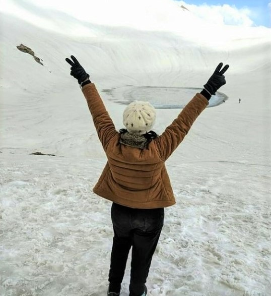
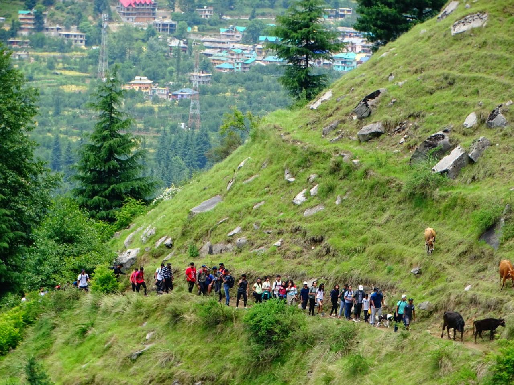
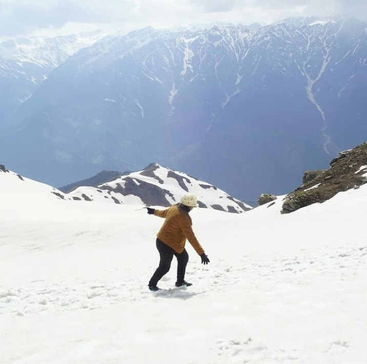
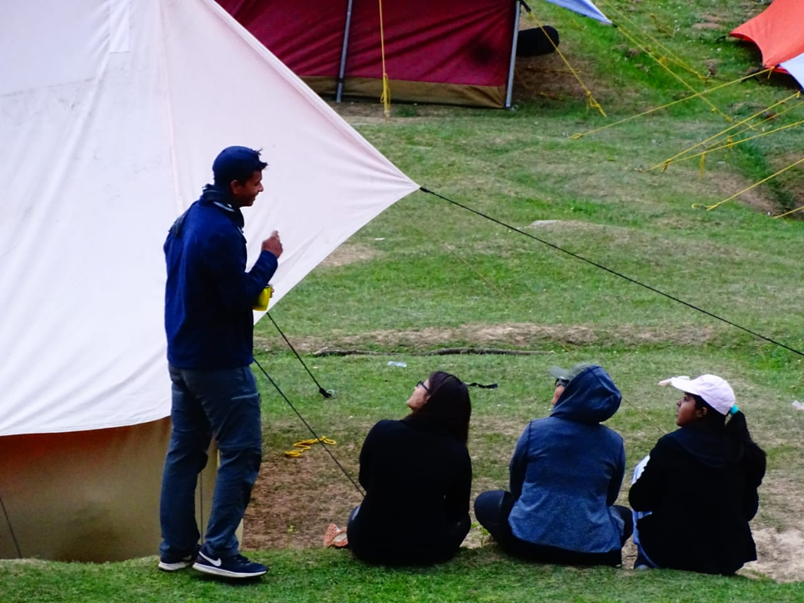
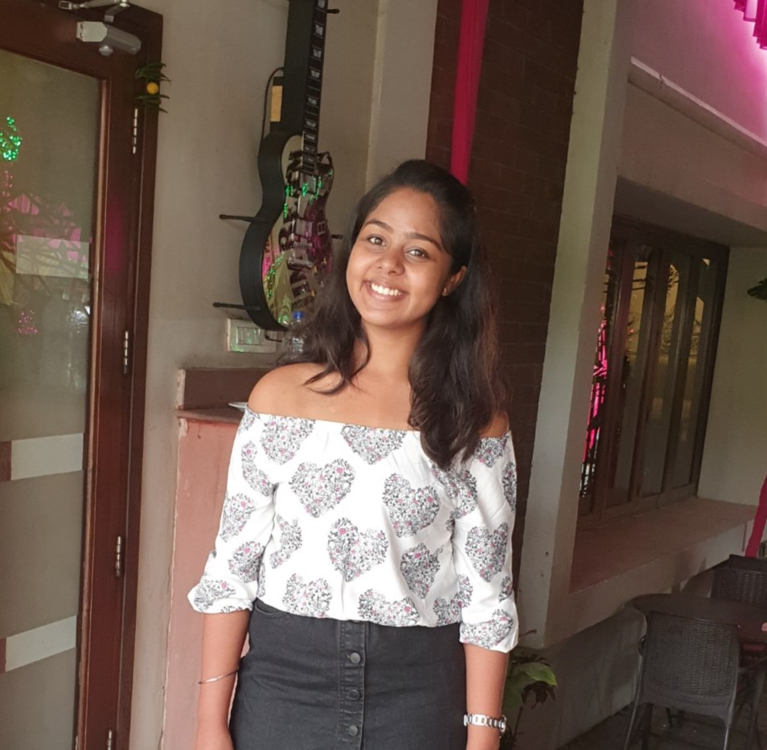

- It is named after Maharishi Bhrigu.The lake never freezes completely.
- The Lake sits amidst Pir-Panjal ranges of the Garhwal Himalayas, located east of Rohtang Pass in the Kullu district of Himachal Pradesh.
- The lake lies at a distance of 6 km from Gulaba, a picturesque village 22 km from Manali and a little short of Rohtang Pass.
- The ideal time to commence the Bhrigu Lake trek is either before June or after July-August, these being the monsoon months when the probability of landslides and other natural calamities is quite high.
- On the Bhrigu valley trek, trekkers will be rewarded with the tremendous view of the mountains.
BRIGHU-LAKE
Bhrigu Lake is a high-altitude glacial lake, perched at a height of 15,000 ft. If you want to treat your eyes with awe-inspiring scenery, then you just need to say YES! to the Bhrigu Lake trek. It's is one of the most beautiful treks that you can experience in the Himachal region of India. It begins from one of the most popular hill stations of Manali.

- A trek is always a great idea to rejuvenate the spirit and explore the wilderness.
- This valley is famous for its temples, beauty and its majestic hills covered with pine and deodar forest and sprawling apple orchards
- Anyone between the age of 6 and 55 can partake in this 7 km trek trail to JOGINI WATERFALL.
- It takes almost 3 hours to climb the waterfall and once you reach there, the breathtaking view of rolling green meadows, and verdant mountains make it all worth it.
- This is one of the best treks in Manali to grasp the local scenic beauty and village life.
KULLU-VALLEY
Kullu Valley is a broad open valley in Himachal Pradesh, India, formed by the Beas River between Manali and Largi. Embark on this trek to Jogini Waterfalls trek filled with adventure, thrill, and mesmerizing views. This trek gives you an opportunity to reconnect with nature and yourself all with tons of fun and excitement. The entire route of the trek is very scenic through tranquil villages aligned with the beautiful valleys.

- The most important thing to note is that you should carry enough food and should be accompanied by a guide who knows the trek.
- Its a tiring trek and one must be ready for a tough day.
- It's literally breathtaking but the view that this trek offers is worth the pain.
- Bhrigu lake also has religious significance so you'll often find locals climbing up for devotional purpose.
- Make sure that you wear waterproof hiking boots.
On your mark, get set SNOW☃️
Another great thing about the trek is that it is almost always covered in snow. The meadow trail takes you
to the quaint lake, from where you can see the beautiful mountains and clear sky; adding an extra charm to
the stunning place. The journey gives you an opportunity to meet the locals and explore the Himachali lifestyle and culture.

- Camping is as exciting as it is refreshing. Take a break from the hustle-bustle of the hectic city life and go camping in Manali.
- With snowfall, enchanting sunrises, and fresh air, the winter season can be the best season to visit Manali camping places.
- The best time for camping is between April and July and between September and October.
- Always carry insect repellants and other necessary gear.
- Whether you want to escape to a coastal campsite or take a break amidst the mountains, you will find several wonders in Manali.
CAMPING
Experiencing a close encounter with nature just outside your tent’s door sounds exciting, doesn’t it? There are very few more enthralling feelings than pitching a tent under the stars, surrounded by hills and valleys, breathing in the fresh air, and enjoying adventure activities. Whether you want to escape to a coastal campsite or take a break amidst the mountains, you will find several wonders in Manali.
About Me

Hey, I’m REETI, an independent traveller writing about my
visits to places near and far.
I research destinations myself.
My passion is travel.
I just love visiting new places,
immersing myself into local cultures of life around
the world and discovering the unexpected!
Hope you are enjoying!😃
If YES! So do
Follow Me
CONTACT
I'd Love To Hear From You 💜